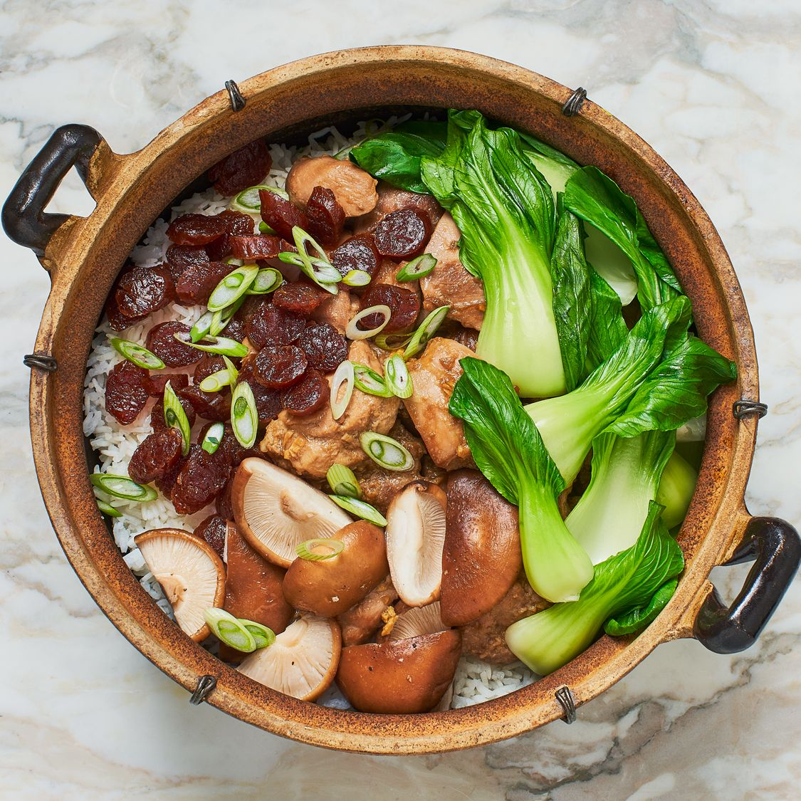
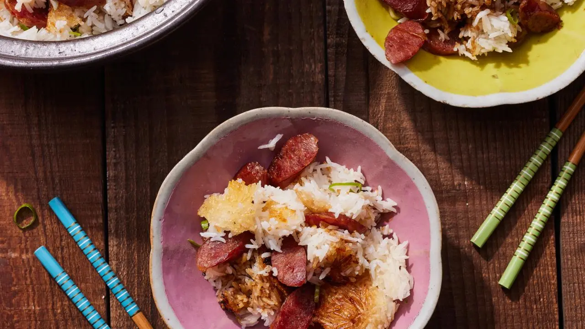
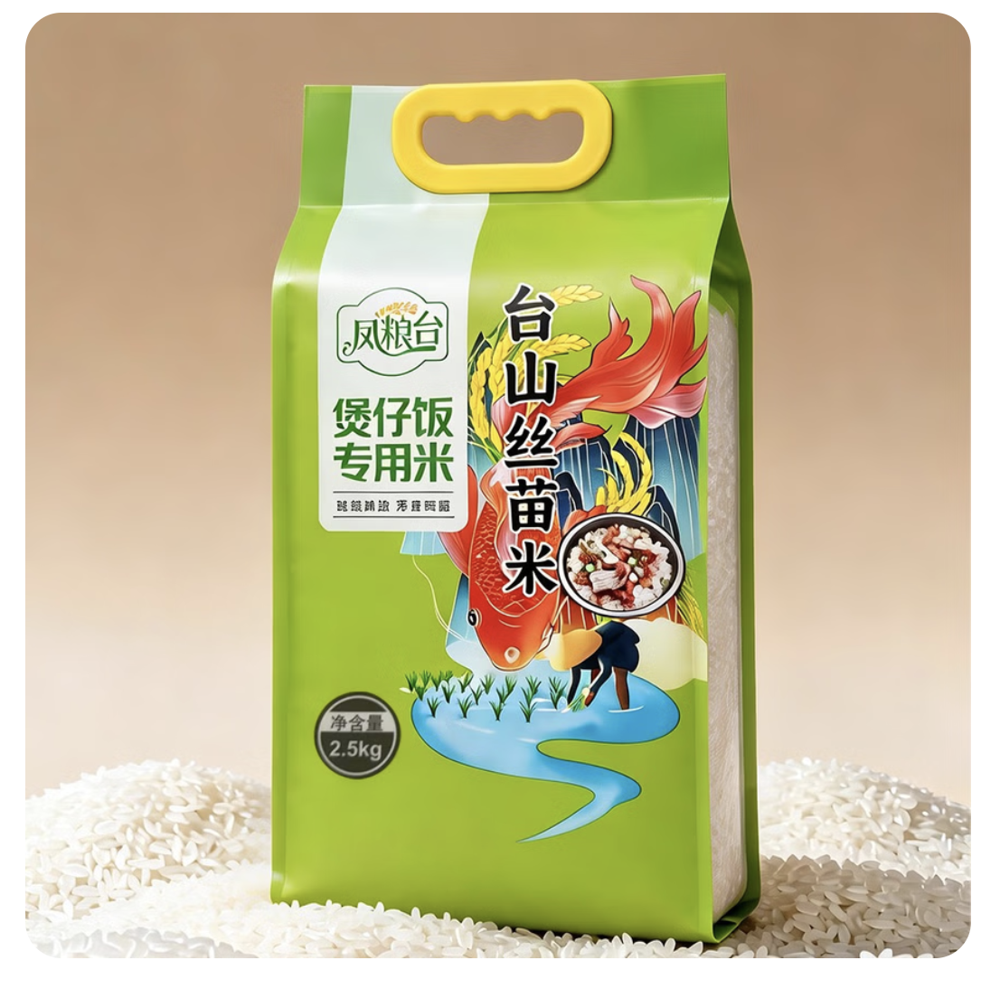

The story of 丝苗米 — and why I never cook Cantonese food without it
Before we talk about the dish, we need to talk about the rice. Because when the rice is wrong, everything is wrong. And when it's 丝苗米 — when it's this rice — even a simple bowl of steamed rice becomes something worth eating slowly.
There's a bag of rice in my pantry that costs $23. My friends look at it and ask if I've lost my mind. A $5 bag of jasmine rice does the job, they say. And they're not wrong — jasmine rice is a fine rice. But it's not this rice.
The rice is called 丝苗米 (sī miáo mǐ) — literally "Silk Seedling Rice." I use the 凤粮台 brand, which sources from Taishan (台山) in Guangdong Province — the ancestral home of more overseas Cantonese than anywhere else on earth. Every time I cook a Cantonese dish that matters to me, and especially every time I make claypot rice, this is the rice in the pot. No substitutions.
丝苗米 has been grown in Guangdong for over 170 years. Its origins trace to the terraced fields of Zengcheng, documented in official county records dating to 1820 during the Qing Dynasty — noted simply as "the best rice variety." That reputation has never changed.
The name itself comes from a legend: two Taoist priests traveling through the Baishui Ca terraced fields during the Jiaqing period planted seeds in the fertile land and named the resulting variety 丝苗 — "silk seedling" — for the slender, almost translucent beauty of each grain. Whether or not the legend is true, the name fits perfectly. These grains look like they were drawn by hand.
Taishan, where my 凤粮台 brand is sourced, sits in the heart of this same Guangdong rice culture. The Pearl River Delta region has a unique combination of intense solar radiation, monsoon rainfall, and consistent warmth that forces the rice plant to develop slowly — concentrating its natural oils, sugars, and fragrance in ways that faster-growing commercial varieties cannot match.
In 2004, 丝苗米 received Designated Origin Protection from China's national quality authority — the same geographic protection that covers Champagne or Parmigiano-Reggiano. You cannot legitimately call any rice 正宗丝苗米 without meeting strict growing standards. Zengcheng holds the official title: "Hometown of Chinese Simiao Rice." The terroir matters, and the government made it official.
Put a handful of 丝苗米 next to regular jasmine rice and the difference is immediate. 丝苗米 grains are noticeably longer and more slender — the official standard requires a length-to-width ratio of at least 2.8. The grains are crystal clear, almost glassy, without the opaque chalky center (called "belly white") that ordinary rice often has. They catch light differently. They genuinely look like they cost more, because they do.
The grain should be like fine jade — clear, slender, with a natural luster. Not white from chalk, but white from purity.
Traditional Guangdong rice grading standard
丝苗米's balanced amylose content (17–25%) produces individual, distinct grains after cooking. They don't clump. They don't go mushy. Each grain holds its shape while staying tender — the fundamental requirement of Cantonese rice cooking.
This rice has measurably higher natural oil content than common varieties. That's why freshly cooked 丝苗米 has a subtle sheen, and why it absorbs sauces and flavors so effectively. The oil is in the grain, not added afterward.
There's a clean, fresh, faintly sweet aroma when 丝苗米 cooks — restrained and natural, not the heavy perfume of lesser fragrant rices. It doesn't compete with the dish; it supports it. This aroma disappears in cheap rice entirely.
丝苗米 is richer in protein (10.48%), amino acids (7.18%), and carries meaningful levels of zinc, selenium, iron, and manganese. It's not just better-tasting rice — it's better for you than the mass-market alternative.
Authentic 丝苗米 varieties yield just 250–300 kg per mu of farmland — significantly less than commercial varieties bred purely for volume. Less rice per field means higher cost per kilogram. This is an honest scarcity, not manufactured luxury.
If you've ever had great 煲仔飯 (bo zai fan) — Cantonese claypot rice — you know what the right rice can do. The top layer should be soft, pillowy, fragrant. The bottom should be crispy, slightly caramelized — the 飯焦 (faan ziu) that regulars fight over at Hong Kong street stalls. Getting both right simultaneously is one of the most demanding things in Cantonese home cooking.


The reason 丝苗米 excels here is structural. Its moderate amylose content means it absorbs heat evenly and doesn't release excess starch into the cooking liquid — so the bottom layer crisps into 飯焦 without burning, while the upper grains stay distinct and light. Common rice varieties either stay too soft (no crust forms) or burn at the bottom before the top finishes cooking.
The 凤粮台 bag even says it directly on the front: 煲仔飯專用米 — "Rice specially for claypot rice." They know what they have. They know what it's for.
Jasmine rice is not a bad rice. For Thai food, quick weeknight meals, or fried rice — jasmine is excellent. But for Cantonese cooking, where rice is often the centerpiece rather than the backdrop, the choice is clear. Claypot rice with jasmine is acceptable. Claypot rice with 丝苗米 is what you were actually trying to make.
I use this rice every single time I cook Cantonese food. No exceptions. For claypot rice it isn't optional — it's the whole point. Once you understand why the rice matters this much, spending $23 on a bag stops feeling expensive. It starts feeling like the most obvious investment in your cooking you can make.
In the US, authentic 丝苗米 is harder to find than it should be. Most Asian grocery stores carry jasmine and short-grain, and that's about it. For the 凤粮台 台山丝苗米, I order from Sayweee.com — an Asian grocery delivery platform that actually carries it and ships nationwide. It's currently listed at $23 per bag (2.5 kg / 5.5 lbs), which works out to roughly $4.20/lb. For a rice this good, with this much history behind it, that's fair.

Premium long-grain indica rice from Taishan, Guangdong. Crystal-clear slender grains with natural oil content. Labeled 煲仔飯專用米 — made specifically for claypot rice.